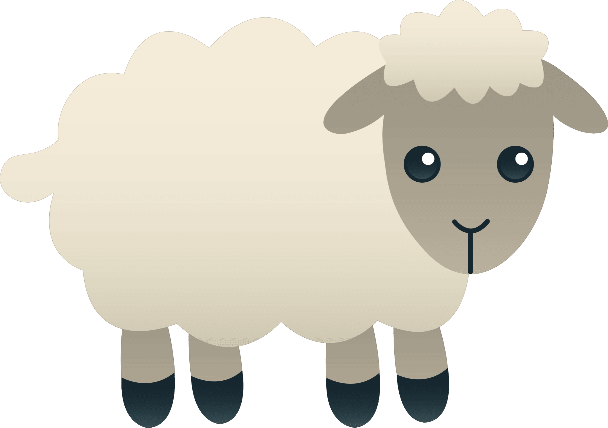
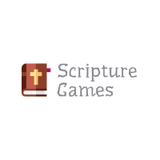
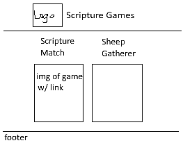
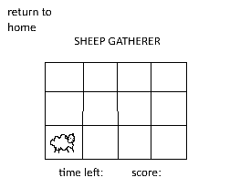
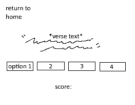

Overview:
Purpose:
A site to play simple scripture-themed games
Audience:
Kids who are bored in sacrament meeting
Content:
Home page with links to games
Dynamic Elements:
Scripture match game: scripture-citation pairs will be stored in an object. Javascript will be used to randomly select and display the given scripture, and will be used to check player input to see if selected answer matches the scripture.
Sheep Gatherer: Like whack-a-mole. Game will take place on a grid. Upon starting the game, sheep will randomly appear and disappear from different spots on the grid. Javascript will be used to add and remove the sheep, and keep score.
Branding:
Website Logo:
Wireframes:
Home page with links to games
Sheep Gatherer game page
Scripture Match game page